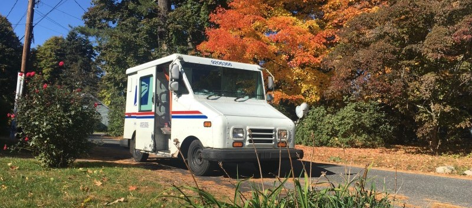

Music, podcasts and audiobooks
Recommendations to make the workday go by faster
By: Evan Lee
Oct. 16, 2023 |
Life
Like any job, delivering mail gets pretty monotonous after a while. But, being out on my own for most of the workday does come with a few perks.
The best perk? I’d give it a close tie between having nobody breath over my shoulder, most of the time, and getting to listen to whatever I like while on the route.
Music, podcasts, audiobooks, they all make the workday feel like it’s going by just a little bit faster. So, for a quick Monday post, I thought I’d share some of my favorite things to listen to while on the clock.
Music 🎼
My absolute favorite thing to listen to is my cassette player. Unlike vinyl, tape is still dirt cheap in 2023 and it’s also portable!
But, I also like finding new music through Spotify and listening to albums I don’t have on YouTube or Soundcloud.
I listen to lots of different music. Classic rock and new wave are my go-to genres, but I also like synthwave, jazz & jazz fusion, blues, lo-fi hip-hop, classic heavy metal, and unapologetically elevator music.
Ask me for a list of my top artists and it’ll take up the whole page. So, I’ll just name drop a few here I always have on repeat.
The Alan Parsons Project - formed by Eric Woolfson and Alan Parsons - the sound engineer behind Pink Floyd’s Dark Side of The Moon - these guys were pioneers in synthesizer music. Pairing the sounds of the future with lyrics inspired by classic literature and contemporary issues, each of their albums tells a unique story that’s best played in full.
Re-Flex - a lesser known New Wave band that only had one album to their name before getting dropped by their label. Known for progressive lyrics on climate decay and policy inaction, a second album was recorded but deemed “too political” for the Reagan era. Finally released in 2010, its lyrics sadly ring more true now than they did in 1984.
Home - best known for “Resonance,” that one song people have nostalgia for even though it’s less than a decade old. The solo synthwave artist behind it, Randy Goffe, released the track when he was only 17. Yet, it’s gone on to influence the entire sub-genre of chillwave.
The Doors - an iconic 60’s rock band that defined my taste during high school. I don’t listen to them as much as before, but they were the first band I remember actually paying money to own music from.
Podcasts & Radio 📰
I like to kick off the day with headline news from NPR or WBZ, keeping myself up-to-date on big issues nationwide and globally.
But, I also have a playlist of other podcasts and radio shows that dig deeper into specific topics I want to learn more about.
Coming from a journalistic background, I need my daily dose of news. But, I also enjoy listening to features on life, science, and travel.
Mostly, I stream these as podcasts from my phone to a portable speaker. Though, I keep a transistor radio around too for when the speaker dies... or my phone dies. (Yes it’s an old phone, no I won’t replace it.)
Breaking News
NPR News Now - the very first thing I listen to in the morning. With updates every hour, it offers quick five minute briefs on headlines around the world. Great way to get right up to speed on today’s top stories.
WBZ 1030 - Boston’s news network, I like to get my local stories from here when I don’t have time to read The MetroWest Daily News.
NYT The Daily - a longer half-hour to full-hour interview based show focusing on a single story or topic. Great for getting a more in-depth look on one of the big issues leading the day.
Politics
Playbook Deep Dive - another interview based show like The Daily, but from Politico with more of a focus on government. Often inviting guests from both aisles, it’s a good way to hear different perspectives.
Washington Today - a podcast by C-SPAN, of all things. Mostly, it plays speeches and debates recorded directly from Congress, government executives, and the President. But interviews are hosted too.
Feature Stories
Unexplainable - a science show from Vox Media exploring unanswered questions, from the deepest depths of the ocean to the furthest reaches of outer space. I love a little existential crisis in the morning.
This American Life - weekly radio program sharing tales from average people’s lives. Sometimes humorous, other times sad - as is life.
Armchair Explorer - travel and adventure stories from across the globe told by those who experienced them.
Audiobooks 📚
Out of anything I listen to, these make the day go by the quickest, immersing me in great storytelling while I work on autopilot.
My local library card lets me borrow audiobooks online through apps like Libby or Hoopla, some can found on YouTube too.
My favorite book genre is Sci-Fi, usually the dystopian kind. But, I also enjoy classic adventure stories and non-fiction history.
Personally, I don’t think audiobooks are as good as regular books. Having the same reader play every single character sometimes breaks the immersion for me. But obviously, I can’t read anything at work besides addresses on mail to deliver, so I’m willing to compromise here.
Do Androids Dream of Electric Sheep? - the book that inspired Blade Runner and arguably the entire cyberpunk genre. Its Phillip K. Dick’s magnum opus on AI, but his shorter novelettes like Second Variety are a great introduction to the Sci-Fi world building he’s known for.
1984 - the definitive, political dystopian novel by George Orwell, need I say more? Certain politicians love to point at this while spreading misinformation about the other side to their partisans. Oh, the irony.
Ready Player One - a fun, albeit somewhat self-obsessed story about video games and 80’s pop culture in a futuristic virtual reality world. Written ten years ago by Ernest Cline, it’s neat to see some of the technology described in this book starting to become more commercialized in our real world.
Around the world in 80 days - moving away from Sci-Fi to an 1872 classic by Jules Verne. This was my favorite adventure story growing up. I was fascinated by all the different places the main characters visited on the journey, and the unique experiences they had along the way.
The Call of the Wild and White Fang - more classic adventure stories by Jack London. What’s unique about these books is that the main characters aren’t people, but rather wolfdogs. Often seen as companion novels, one tells the story of man’s best friend turning wild once abandoned, and the other of a beast being tamed through love.
Walden - Henry David Thoreau’s transcendental, though arguably somewhat dramatized, non-fiction recount of his time spent living alone at Walden Pond. His search for a simple life in nature away from the hustle and bustle of the growing industrialized world.
Of course, like Waldon, sometimes I also just enjoy the peace and quiet of working alone, letting myself get lost in my own thoughts.
Enjoying the Fall weather, not thinking about Winter.